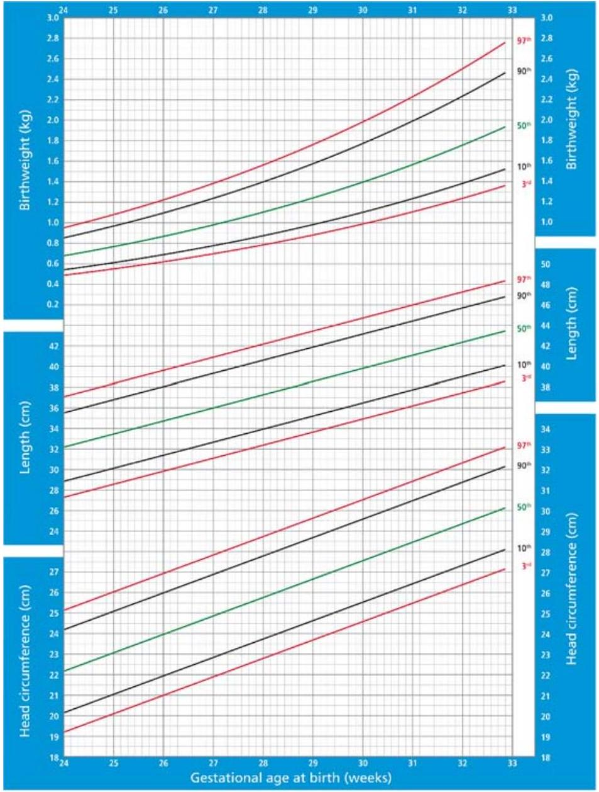
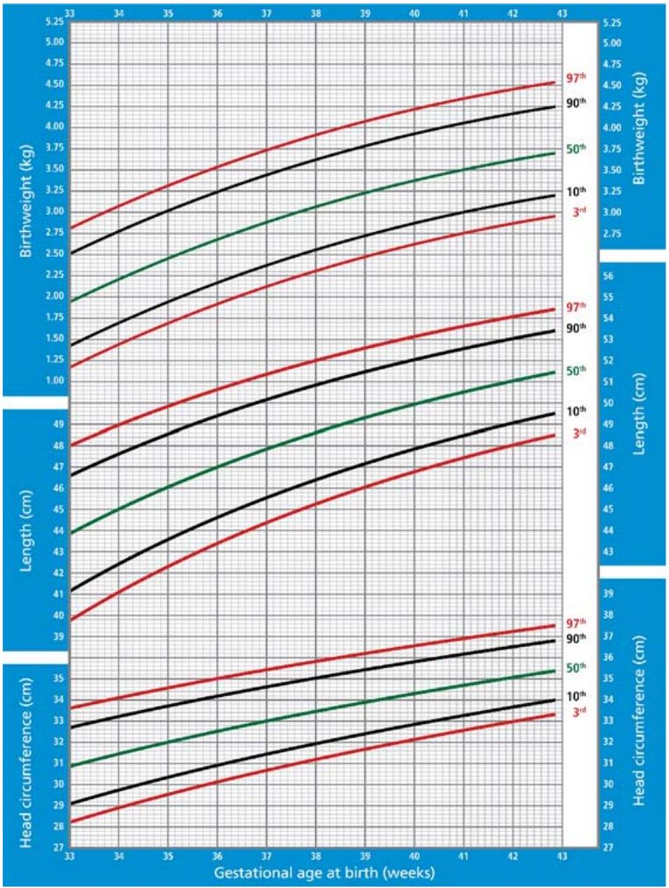
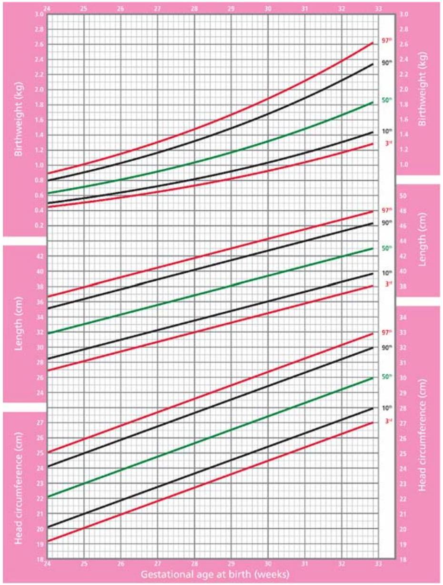
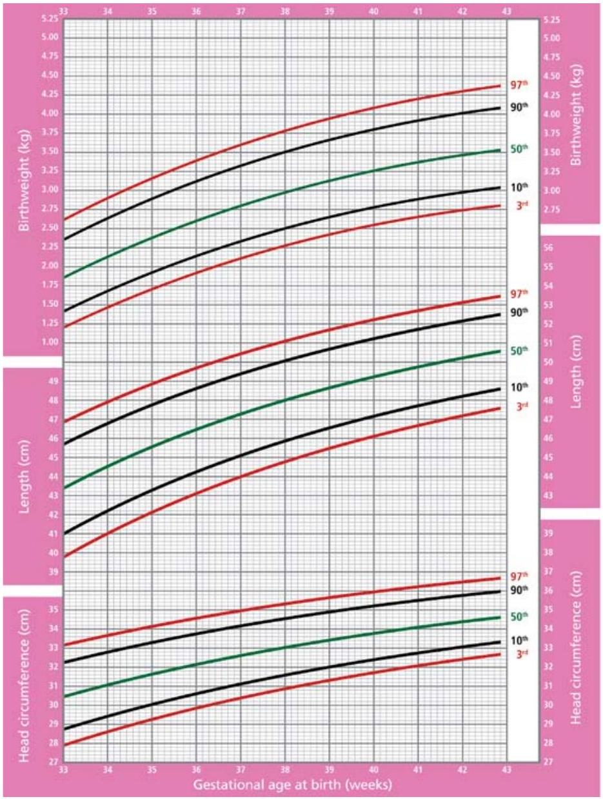
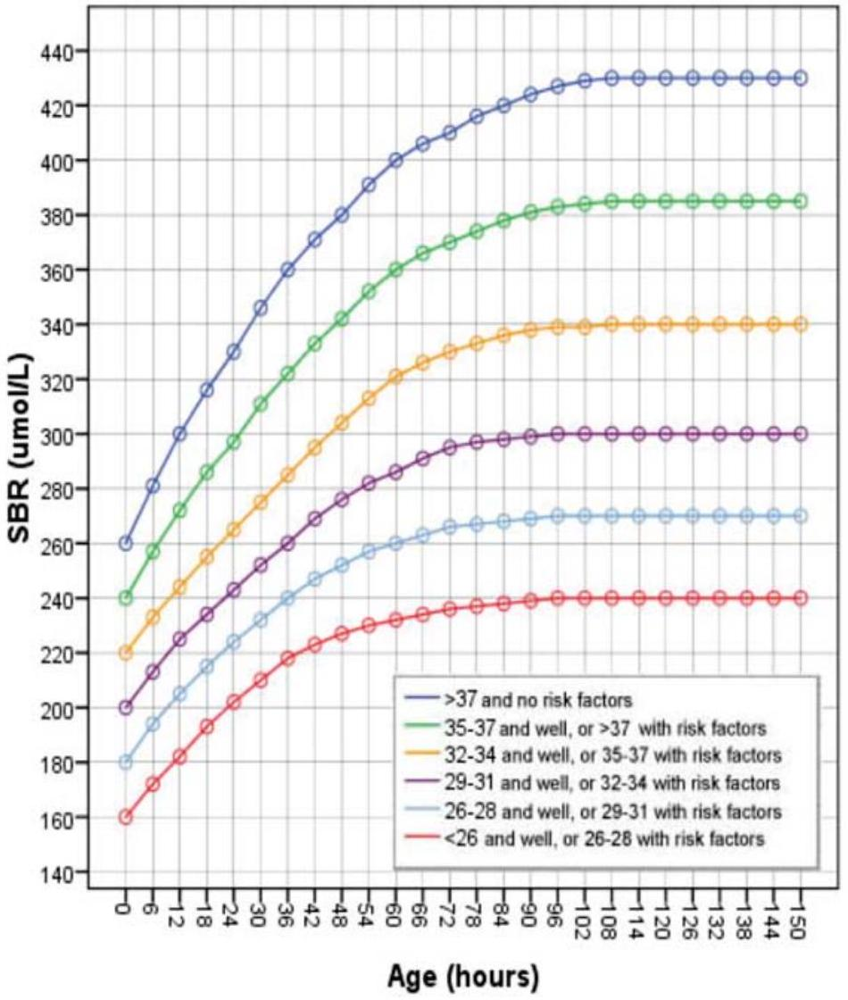
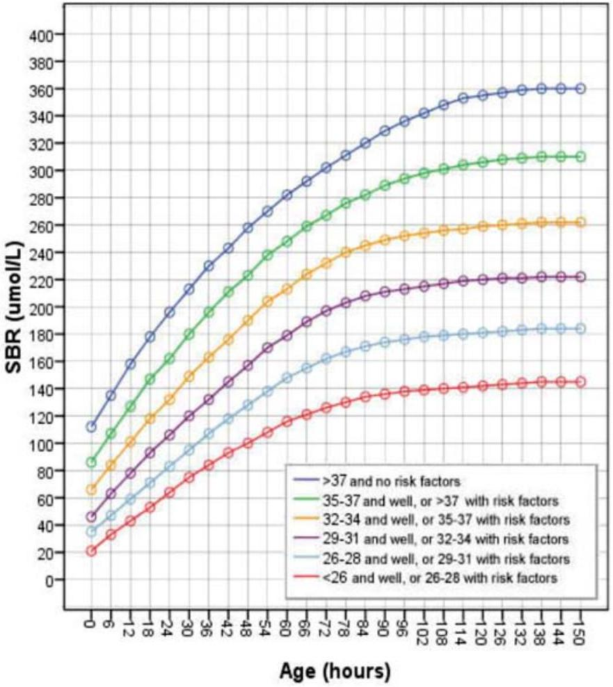
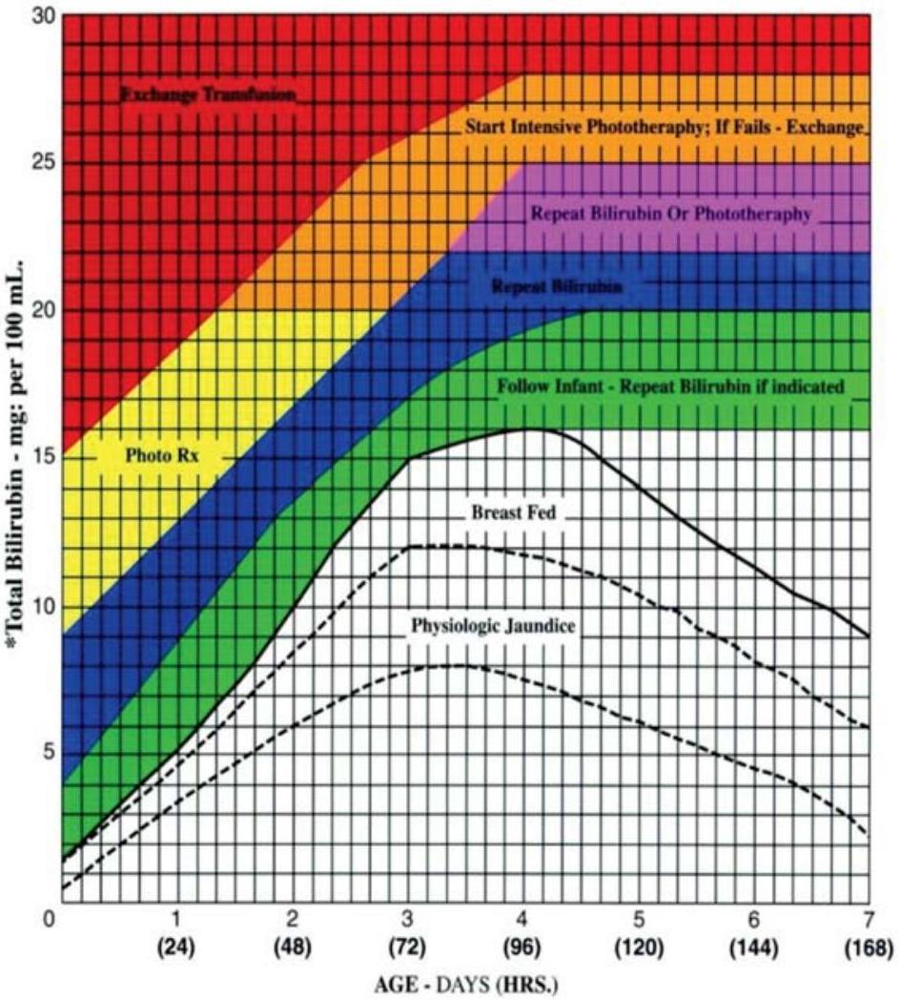

Special Topics & Appendices
30.0 PAIN MANAGEMENT
GENERAL PRINCIPLES OF PAIN PREVENTION AND MANAGEMENT PAIN IN NEWBORNS
- Pain in newborns is often unrecognised and undertreated.
- Pain experienced in the newborn period has long-term effects of painful stimulation.
- If a procedure is painful in adults it should be considered painful in newborns, even if they are preterm.
- A lack of behavioural responses especially preterm neonates (including crying and movement) does not necessarily indicate a lack of pain.
- Sedation does not provide pain relief and may mask the neonate's response to pain.
- Pain increases the risk of clinical complications and mortality.
Painful procedures commonly performed
- All invasive procedures that use a needle
- Tube and catheter insertions and removals
- Removal of adhesive tapes
- Tracheal intubation/extubation
- Mechanical ventilation
- Chest physiotherapy
- Eye examination
- All surgical procedures
Recognition and scoring of pain (See tables & figure next page)
Table 1: Pain assessment should be included in every vital signs assessment.
Table 2: for NICU and postoperative period or during use of pharmacological relief of pain
Interpreter with caution for the preterm infant
1. NEONATAL INFANT PAIN SCALE (NIPS)
| Score | 0 | 1 | 2 |
|---|---|---|---|
| Facial expression | Res ul face, neutral expression | Grimace: Tight facial muscles (see figure) | |
| Cry | No cry: Quiet | Whimper: Mild mourning intermi ent | Vigorouus cry: Loud scream, shrill, con nouus OR Silent cry if intubated |
| Breathing Pa ern | Relaxed: Usual pa ern | Change in breathing: Indrawing, Irregular, faster than normal, breath holding | |
| Arms | Relaxed: no muscle rigidity, occasional movement | Flexed/extended: Tense, straight arm, rigid &/or rapid extension flexion | |
| Legs | Relaxed: no muscle rigidity, occasional movement | Flexed/extended: Tense, straight arm, rigid &/or rapid extension flexion | |
| State of arousal | Sleeping/awake: Quite, peaceful, or alert & se led | Fussy: Alert, restless & thrashing |
2. NEONATAL PAIN, AGITATION AND SEDATION SCALE (N-PASS)
| ASSESSMENT CRITERIA | SEDATION | SEDATION/PAIN | PAIN/AGITATION | ||
|---|---|---|---|---|---|
| -2 | -1 | 0 | +1 | +2 | |
| Crying Irritability | No crying with painfuls muli | Moans or cries minimally with painful s muli | No seda on / No pain signs | Irritable or crying at interval Consolable | High Pitched or silent, con nuous cry inconsoloble |
| Behavior state | No arousal at any s muli No spontaneous movement | Arouses minimally to s muli Li le spontaneous movement | No seda on / No pain signs | Restless, squirming Awakens frequently | Arching, kicking. Constantly awake or arouses minimally/ no movement (not sedated) |
| Facial expression | Mouth is lax No expression | Minimal expression with s muli | No seda on / no pain signs | Any pain expression intermi ent | Any pain expression con nual |
| Extremi es tone | No grasp reflex Flaccid tone | Weak grasp reflex 1 muscle tone | No seda on/no pain signs | Intermi ent clenching toes, fist or finger splay Body is not tense | Con nual clenched toes, fist or finger splay Body is tense |
| Vital sign: HR, RR, BP, SaO2 | No variability with s muli Hypoven la on or apnea | <10% variability from baseline with s muli | No seda on/no pain signs | 1-10-20% from baseline SaO2 76-85% with s mula or quick recovery | > 20%from baseline SaO2<=75% with s mula on slow recovery Out of sync with vent |
Interpretation
- Deep sedation; Score of -10 to -5
- Light sedation: Score of -5 to -2
- A negative score without the administration of opioids/sedatives may indicate the following:
- Infant's response to prolonged or persistent pain/stress
- Neurologic depression, sepsis or other pathology
MANAGEMENT
PREVENTION
- Anticipate and provide analgesia before/during any painful procedure
- Reduce number of painful procedures as much as possible
- Plan to do concurrent procedures whenever possible
- Use non-pharmacological interventions to minimise pain during procedures
After scoring determine the management using the flow diagram below
Non pharmacological strategies to reduce pain include:
- Swaddling, Nesting, kangaroo care
- Use of nonnutritive sucking
- Use of sucrose on cotton wool
- Lowering noise levels in the NICU
- Avoiding exposure to bright lights
- Promoting of day/night light cycles
These can be used for most of the painful procedure in the NBU
Pharmacologic measures: Analgesia & sedation
Non Opioids
Paracetamol $20-25 \mathrm{mg} / \mathrm{kg}$ stat then $10-15 \mathrm{mg} / \mathrm{kg} 8$ hrly
Ibuprofen $4-10 \mathrm{mg} / \mathrm{kg} /$ dose $6-8 \mathrm{hrly}$
Opioids
Morphine $0.05-0.1 \mathrm{mg} / \mathrm{kg} /$ dose $4-6$ hrly or infusion $10-15 \mathrm{mcg} / \mathrm{kg} / \mathrm{hr}$ over 4-6hrs for ventilated babies
Fentanyl $0.3-2 \mathrm{mg} / \mathrm{kg} /$ dose or infusion $0.3-5 \mathrm{mcg} / \mathrm{kg} / \mathrm{hr}$ over $30-60$ minutes
Benzodiazepines
Midazolam $0.05-0.15 \mathrm{mg} / \mathrm{kg} /$ dose over 5 minutes, $2-4 \mathrm{hrly} / \mathrm{PRN}$ useful for agitated ventilated babies
Watch out for respiratory depression with opioids & benzodiazepines
31.0 IMMUNIZATION SCHEDULE FOR THE PRETERM INFANT
Based on the evidence available, preterm infants should be vaccinated following the standard vaccination schedules should be based on their chronological age and not on actual weight. The doses used for term infants are the same for preterm infants. But: Consider booster vaccination doses, especially for DTP, Hib, Polio, Pneumococcus, Measles after the age of one year - usually at 12,15 and 18 months.
31.1 ADVERSE REACTIONS/SIDE EFFECTS
The adverse reactions/side effects reported in preterm infants following vaccination with the standard scheduled antigens are similar to those reported in term infants. Hence there is no increased risk in vaccinating preterm infants based on their chronological age and following the standard vaccination schedules.
31.2 IMMUNIZATION SCHEDULE FOR THE PRETERM INFANT
| BCG | POLIO OPV/IPV | PENTAVALENT VACCINE (DTP, Hib, Hep B) | PVC | ROTA VIRUS VACCINE | MEASLES | MUMPS MEASLES RUBELLA (MMR) | |
|---|---|---|---|---|---|---|---|
| Stable and Growing | $\checkmark$ | $\checkmark$ (OPV) | |||||
| 6 WEEKS | $\checkmark$ | $\checkmark$ | $\checkmark$ | $\checkmark$ | |||
| 10 WEEKS | $\checkmark$ | $\checkmark$ | $\checkmark$ | $\checkmark$ | |||
| 14 WEEKS | $\checkmark$ | $\checkmark$ | $\checkmark$ | ROTATEQ | |||
| 9 MONTHS | $\checkmark$ (+ YELLOW FEVER) | ||||||
| 12-15 MONTHS | $\checkmark$ | $\checkmark$ | $\checkmark$ | $\checkmark$ | $\checkmark$ (MR) | OR | |
| 18 MONTHS | $\checkmark$ | $\checkmark$ | |||||
| 24 MONTHS | MR OR | $\checkmark$ |
NOTES
- There is good response to both ROTARIX and ROTATEQ vaccines
- Vitamin A should be given every six (6) months from the chronological age of six months to the chronological age of five years
32.0 PRETERM/LOW BIRTH WEIGHT CARE: SUMMARY
DELIVERY
- Delay cord clumping unless requires resuscitation
- Prevent hypothermia: Practice skin to skin or have a warmer
- Transfer to newborn as soon as possible keep warm & watch breathing during transfer
- If needs resuscitation: As much as possible avoid $100\%$ oxygen
LATE PRETERM/BIRTH WEIGHT $\geq 2000 \mathrm{G}$
- Observe in the postnatal ward - ensure adequate breastfeeding before discharge.
- Show mother how to practice kangaroo care at home
- Give multivitamins from 2 weeks of age till 1 yr
- Give iron supplement from 4 weeks of age till 1yr
PRETERM <34 WEEKS/BIRTH WEIGHT <2000G
Admit to newborn unit
- Assess & determine current problem
- Respiratory distress: Do a Silverman-Anderson score and treat accordingly
- Prevent apnoea of prematurity: give caffeine from birth till gestation of 34weeks
- Initiate IV dextrose/feeding immediately according to size and condition
- Monitor blood glucose regularly especially if on prolonged IV fluids and delayed enteral feeds
| PROCEDURE | DAY 2-3 | DAY 7-10 | DAY 28/4WKS | DAY 42/6WKS | 10 WEEKS |
|---|---|---|---|---|---|
| Cranial ultrasound | $1^{\text {st }}$ scan | $2^{\text {nd }}$ scan | Repeat only if necessary and treat accordingly | ||
| Haemoglobin | Monitor preferably done weekly | Monitor as needed | |||
| Calcium, Phosphate, Alkaline phosphatase | $1^{\text {st }}$ screen: Treat according to results | ||||
| Retinopathy of prematurity | $1^{\text {st }}$ screen | Repeat as needed | |||
| Hearing | $1^{\text {st }}$ screen | comprehensive audiological evaluation by three months of age | |||
| Immunise* | Start as per Kenyan schedule | Continue as per schedule | |||
| Multivitamins Especially Vitamin D | Start supplement & continue till 12months of age | ||||
| Iron | Start supplement & continue till 12months of age | ||||
33.0 Appendices
Appendix i: Ballard Gestation Assessment
PHYSICAL MATURITY
Six external features are examined. The baby has to be turned over to examine the amount of lanugo. If the baby is too sick to be turned over, then the amount of lanugo is not scored.
SKIN: Examine the skin over the front of the chest and abdomen, and also look at the limbs. More mature babies have thicker skin.
LANUGO: This is the fine, fluffy hair that is seen over the back of small babies. Except for very immature babies that have no lanugo, the amount of lanugo decreases with maturity.
PLANTAR CREASES: Use your thumbs to stretch the skin on the bottom of the baby's foot. Very fine wrinkles, that disappear with stretching, are not important. More mature babies have more creases.
BREAST: Both the appearance of the breast and the size of the breast bud are considered. Palpate for the breast bud by gently feeling under the nipple with your index finger and thumb. More mature babies have a bigger areola and breast bud.
EAR: Both the shape and thickness of the external ear are considered. With increasing maturity the edge of the ear curvs in. In addition, the cartilage in the ear thickens with maturity so that the ear springs back into the normal position after it is folded against the baby's head.
GENITALIA: Male and female genitalia are scored differently. With maturity the testes descend in the male and the scrotum becomes wrinkled. In females the labia majora increase in size with maturity.
| PHYSICAL MATURITY SIGN | SCORE | RECORD SCORE HERE | ||||||
|---|---|---|---|---|---|---|---|---|
| -1 | 0 | 1 | 2 | 3 | 4 | 5 | ||
| SKIN | sticky, friable, transparent | gelatinous, red, translucent | smooth pink, visible veins | superficial peeling &/or rash, few veins | cracking, pale areas, rare veins | parchment, deep cracking, no vessels | leathery, cracked, wrinkled | |
| LANUGO | none | sparse | abundant | thinning | bald areas | mostly bald | ||
| PLANTAR SURFACE | heel-toe $40-50 \mathrm{~mm}:-1 \leq 40 \mathrm{~mm} ;-2$ | $>50 \mathrm{~mm}$ no crease | faint red marks | anterior transverse crease only | creases ant. 2/3 | creases over entire sole | ||
| BREAST | imperceptable | barely perceptable | flat areola no bud | stippled areola 1-2 mm bud | raised areola 3-4 mm bud | full areola 5-10 mm bud | ||
| EYE / EAR | lids fused loosely;-1 tightly:-2 | lids open pinna flat stays folded | sl. curved pinna; soft; slow recoil | well-curved pinna; soft but ready recoil | formed & firm instant recoil | thick cartilage ear stiff | ||
| GENITALS (Male) | scrotum flat, smooth | scrotum empty. faint rugae | testes in upper canal, rare rugae | testes descending, few rugae | testes down, good rugae | testes pendulous, deep rugae | ||
| GENITALS (Female) | clitoris prominent & labia flat | prominent clitoris & small labia minora | prominent clitoris & enlarging minora | majora & minora equally prominent | majora large, minora small | majora cover clitoris & minora | ||
| TOTAL PHYSICAL MATURITY SCORE | ||||||||
SCORING
Add up the scores from the physical and neurological features and use the table below to estimate the gestational age.
| Score | -10 | -5 | 0 | 5 | 10 | 15 | 20 | 25 | 30 | 35 | 40 | 45 | 50 |
| Weeks | 20 | 22 | 24 | 26 | 28 | 30 | 32 | 34 | 36 | 38 | 40 | 42 | 44 |
Appendix ii: International Standards for Size at Birth (Boys) (24-33 weeks)
Appendix iii: International Standards for Size at Birth (Boys) (33-43 weeks)
Appendix iv: International Standards for Size at Birth (Girls) (24-33 weeks)
Appendix v: International Standards for Size at Birth (Girls) (33-43 weeks)
Appendix vi: BILIRUBIN: EXCHANGE TRANSFUSION
Appendix vii: BILIRUBIN: PHOTOTHERAPY
Appendix viii: Bilirubin Management Guidelines For Healthy Term Infants
Appendix ix: NEWBORN FLUID/FEEDING AND OBSERVATION CHART (24 HOURS)